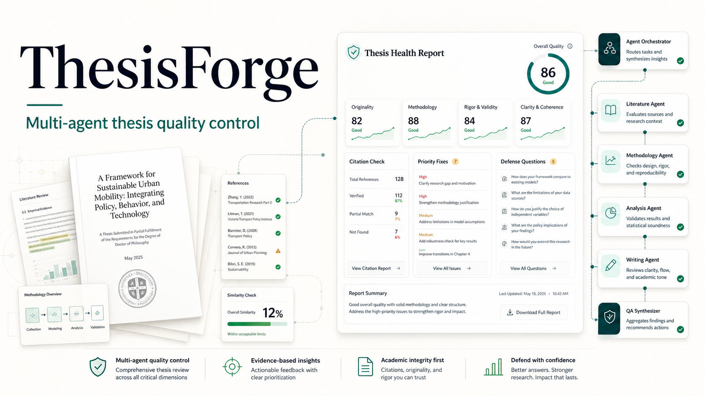

Drafts, references, results, supervisor feedback, and defense prep usually live in separate tools. Students often assemble the thesis before discovering whether the work is coherent and defensible.
ThesisForge reviews the work users already have. It turns thesis text, references, result files, and project metadata into a structured report with scores, priorities, citation notes, and defense questions.
Thesis Health Report
Overall quality score with visible evidence and next actions.
The workflow is visible: users see progress, handoffs, collaboration messages, and how the final report was assembled.
The app includes a safe synthetic thesis project so reviewers can load data, run the agent workflow, inspect collaboration logs, and open the final report without using private academic material.
The MVP has authenticated project workflows, parsing, background jobs, agent orchestration, report persistence, deployment config, and a safe analytics path that avoids storing private thesis content.
ThesisForge gives students a clear path from scattered materials to focused revision work, while keeping the product boundary on review, evidence, and preparation.